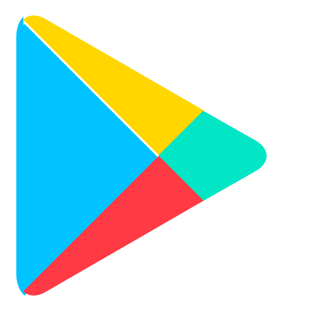
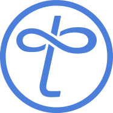
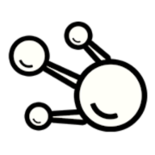
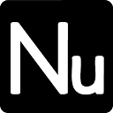
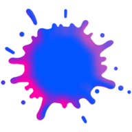

Genel Bakış
Mobil Uygulamalar
Aktif
Gizlilik & Yasal Hub
📱 Mobil Projeler & Araçlar
Detay için karta tıklayın
mobile-suite-1
Performans odaklı, modern arayüzlü ve kullanıcı dostu Android uygulaması. Proje sayfası ve detayları için tıklayın.
games-arcade-1
Mobil cihazlar için geliştirilen eğlenceli, rahatlatıcı ve zeka odaklı mini oyunlar.
Geliştirme & Dağıtım Döngüsü (Activity Cadence)
Sürekli teslimat, hata düzeltmeleri ve kararlı dağıtım
Az
Çok
🌐 Dijital Profil & Millix Ekosistem Kanalları
X (Twitter)
Social
@neronalp · Fikirler & duyurular
Instagram
Media
@neronalp · Tasarım & kareler

Google Play
Store
Neron Studio · Mobil Uygulamalar

Tangled
Millix Social
tangled.com · Merkeziyetsiz Ağ

OnTheNode
Publishing
onthenode.com · Bilim & Makale

Nutanica
Knowledge
nutanica.com · Bilgi Ağı (Wiki)

Splot
P2P Market
splot.io · Millix İlan & Pazar Yeri
Pagado
Payments
pagado.io · P2P Mikro-Ödeme